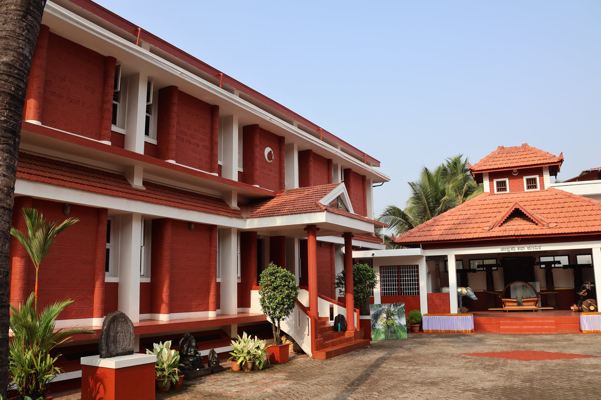
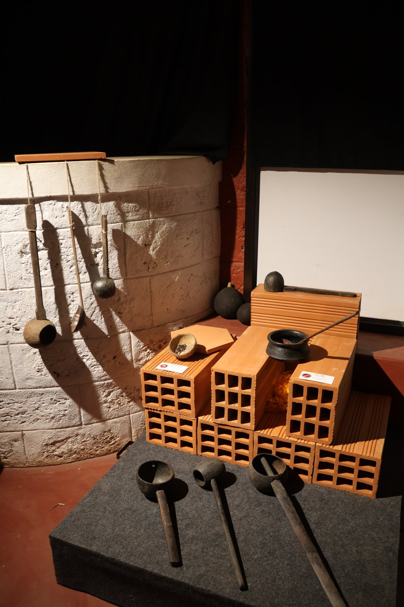
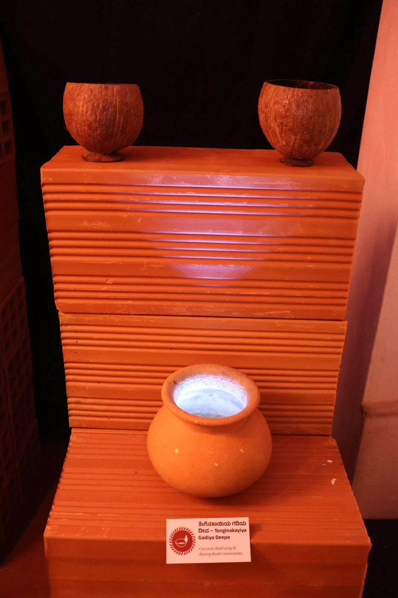
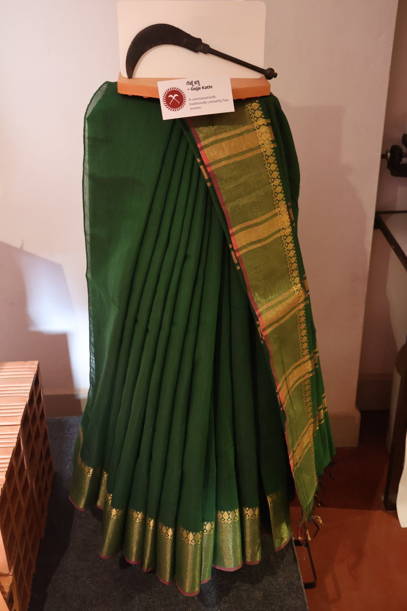
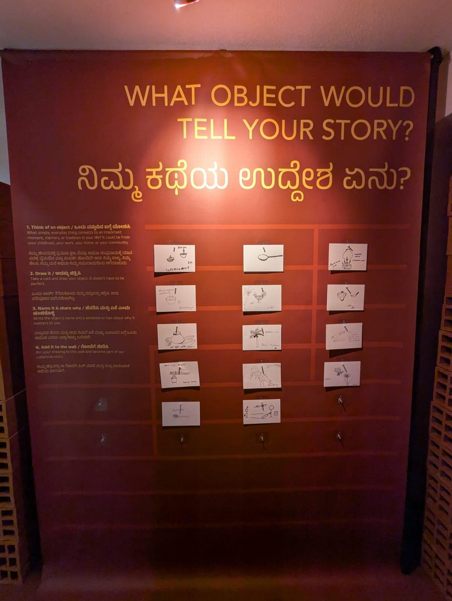
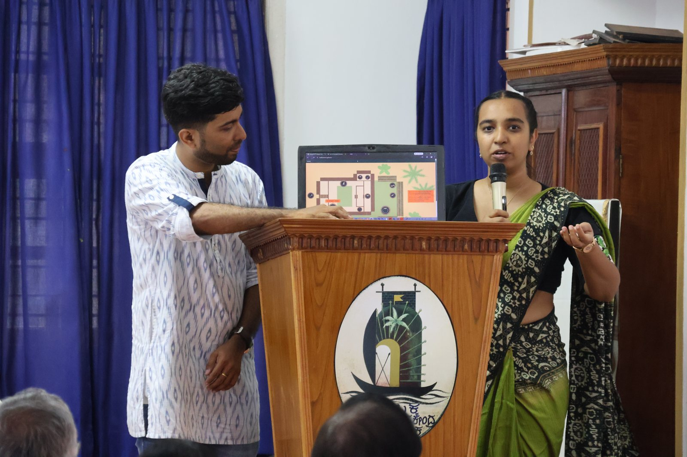
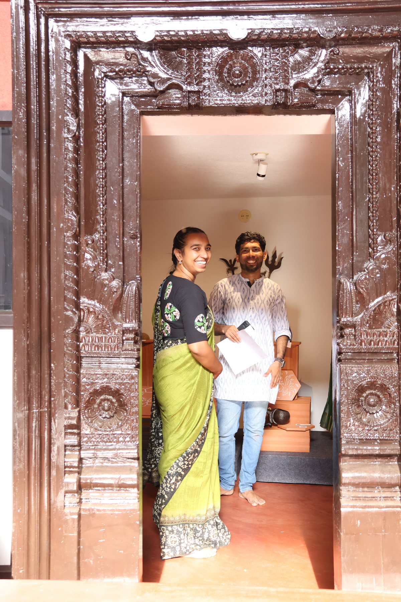
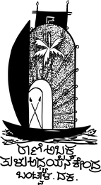

Beneath the Green Canopy
Ten everyday Tulu objects trace a life from birth to death, through the coconut palm.

- ROLE
- Curator and designer
- WITH
- Brian Neizil D'Souza
- SUPPORT
- IFA & Tata Trusts, Archives and Museums Programme
- PROJECT
- June 2025 – May 2026
- OPENED
- 11 April 2026
The one who planted the tree is gone, the shade remains.
Tulu culture, rooted in coastal Karnataka, is eroding fast. Objects that once shaped everyday life, like cradles, ladles and ritual knives, are being replaced or forgotten. The museum held a collection of them, but no way to make them speak to younger visitors.
We followed a single plant, the coconut palm, through ten objects and ten stages of life: from the three-eyed coconut shell used for a baby's ritual bath to the coconut-shell lamp lit for the dead. It was our first project with an anthropology museum.
Designing with what was there
We started with complex, ornamental illustrations and simplified them three times, until they echoed kavi, the red-oxide floor art people on the coast recognise instantly. Brian's illustrations became the visual language for everything: panels, the app and the activity book.
The terracotta-brick plinths came out of a material test, not a drawing. Bricks were cheap, local, reusable and modular, so we could adjust heights on site until each composition felt right. When the venue changed mid-project to a narrower room with a red-oxide floor, we redrew the layout, covered the built-in shelves with fabric, and used light to create zones.
Each object became a small tableau: the ceremonial knife with bells against a folded silk saree, the spice container surrounded by coriander, cumin and fenugreek you could smell, the death lamp glowing in a darkened corner. Everything was bilingual, so Kannada speakers were the primary audience, not an afterthought.



HOW IT CAME TOGETHER
- 01ResearchConversations with Dr Thukaram Poojary, Dr Ashalatha Suvarna and elders and artists in Mangalore.
- 02Visual languageIllustrations simplified towards kavi floor art, in cream, red-oxide and green.
- 03Material testsTerracotta bricks as modular, sustainable plinths.
- 04Venue changeA complete redesign for a longer, narrower room.
- 05Offline appThe website rebuilt as an Android app when the gallery had no internet.
Step inside a Tulu home
An illustrated map of a traditional home with ten rooms, each holding one object, with narration in English and Kannada.

BEYOND THE GALLERY
- 01Participatory wallVisitors drew an object from their own lives and pinned it up.
- 02Activity booksA foldout book with stamps, a spice hunt and story panels; 60+ given to students.
- 03Tile mural workshop20+ participants painted kori katta motifs on terracotta tiles, now a mural at the museum entrance.
- 04OpeningAbout 100 people on 11 April 2026, with curator talks and a guided tour.


In the press
Vijaya Karnataka, Hosa Digantha, Kannada Prabha, daijiworld, Bantwal News and Coastal Bulletin.
CREDITS & SUPPORT
Supported by
 Venue
Venue